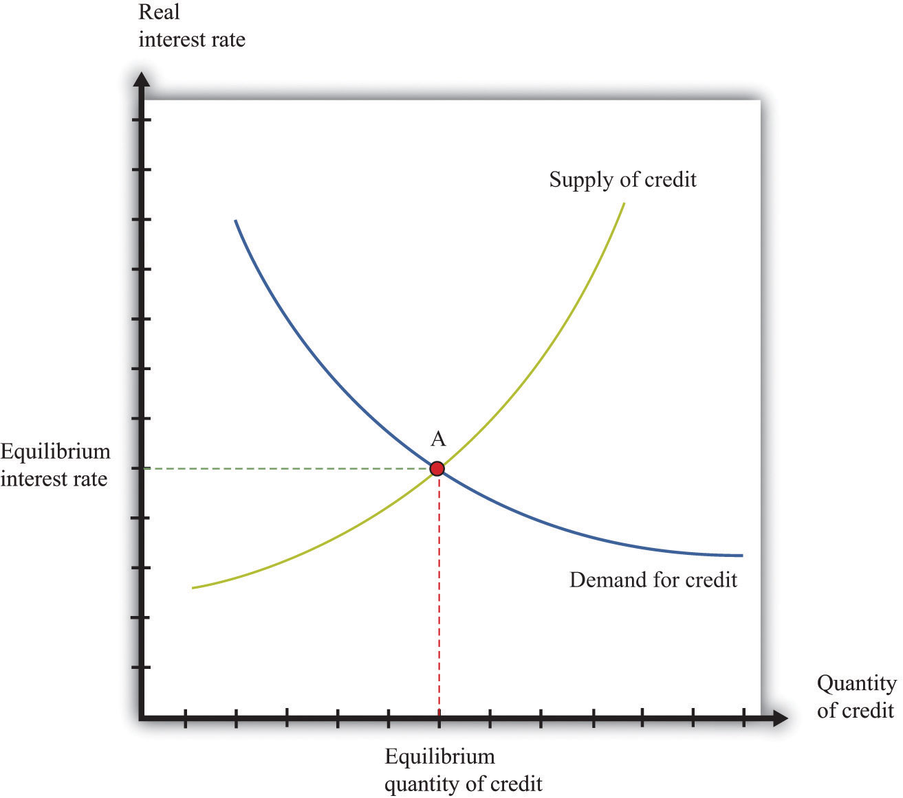
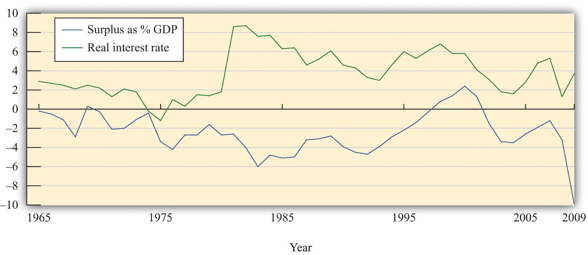
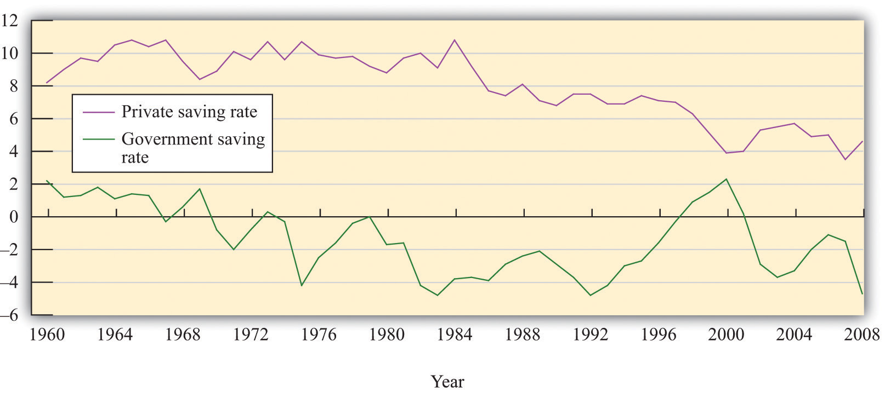
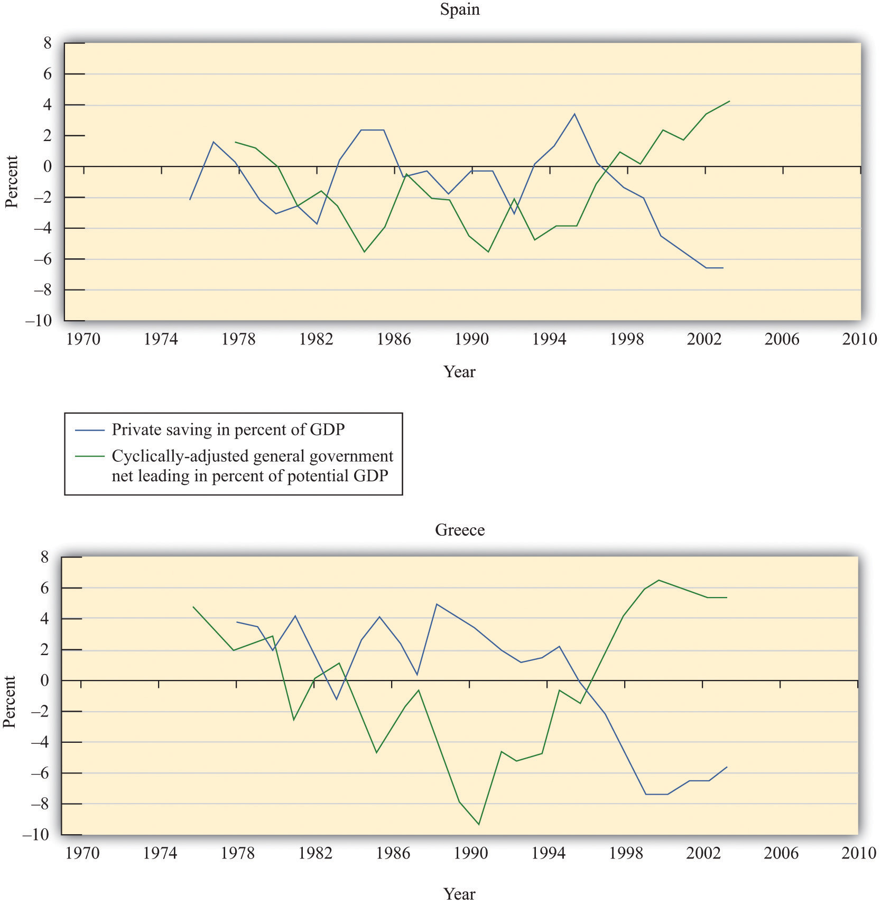
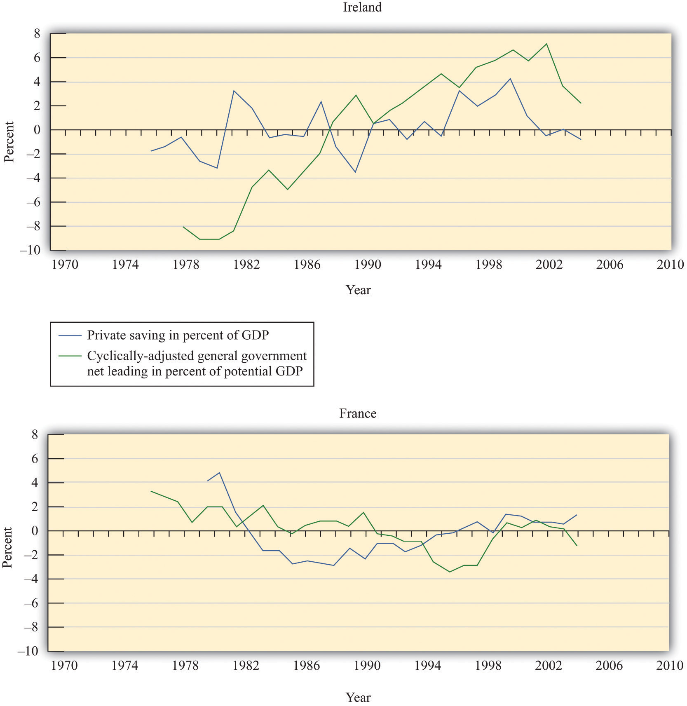

After you have read this section, you should be able to answer the following questions:
Buried in our analysis of the crowding-out effect is a critical assumption. We argued that an increase in the government deficit would reduce national savings at every level of the interest rate. Implicitly, we assumed that the change in government behavior had no direct effect on private savings. Instead, there was an indirect effect: savings increased when the interest rate increased. But at any given level of interest rates, we assumed that private saving was unchanged.
Perhaps that is not the most reasonable assumption. Consider the following thought experiment:
What will be your response to this policy? A natural reaction is just to save the entire tax cut. After all, if the government cuts taxes in this fashion, then all it is doing is postponing your tax bill by one year. Your lifetime resources have not increased at all. Hence you can save the entire tax cut, accumulate the interest income, and use this income to pay off your increased tax liability next year.
The household’s lifetime budget constraint tells us that households must equate the discounted present values of income and expenditures over their lifetimes. We use it here to help us understand how households behave when there are changes in the timing of their income. In general, the budget constraint must be expressed in terms of discounted present values:
discounted present value of lifetime consumption = discounted present value of lifetime disposable income.When the real interest rate is zero, life is simple. It is legitimate simply to add together income and consumption in different years. In this case, the lifetime budget constraint says that
total lifetime disposable income = total lifetime consumption.The measure of income used in the household’s budget constraint is lifetime disposable income. You can think of discounted lifetime disposable income as the difference between the discounted present value of income (before taxes) and the discounted present value of taxes. The effect of a government’s tax policy is through the discounted present value of household taxes.
Toolkit: Section 31.34 "The Life-Cycle Model of Consumption"
You can review the life-cycle model of consumption in the toolkit.
In our earlier thought experiment, the increase in the government deficit was exactly offset by an increase in private savings. This implication is shown in Figure 29.18 "Ricardian Equivalence": nothing happens. The composition of national savings changes, so public savings decrease, and private savings increase. But these two changes exactly offset each other since the private sector saves the entire amount of the tax cut. As a result, the supply curve does not shift. Since national savings do not change, the equilibrium remains at point A, and there is no crowding-out effect. Economists call this idea Ricardian equivalenceA balance that occurs when a decrease in taxes leads to an equal increase in private saving and thus no change in either the real interest rate or investment., after David Ricardo, the 19th century economist who first suggested such a link between public and private saving. Ricardian equivalence occurs when an increase in the government deficit leads to an equal increase in private saving and no change in either the real interest rate or investment.
Figure 29.18 Ricardian Equivalence
An increase in the government deficit is equivalent to a decrease in government savings, which shifts national savings leftward. In a Ricardian world, private savings increases by an offsetting amount, so the final result is no change in national savings.
The Ricardian perspective can be summarized by two related claims:
These claims follow from the government’s intertemporal budget constraint and the household’s lifetime budget constraint, taken together. The government’s constraint tells us that a given amount (that is, a given discounted present value) of government spending implies a need for a given (discounted present value) amount of taxes. These taxes could come at all sorts of different times, with different implications for the deficit, but the total amount of taxes must be enough to pay for the total amount of spending. The household’s lifetime budget constraint tells us that the timing of taxes may be irrelevant to households as well: they should care about the total lifetime (after-tax) resources that they have available to them.
The implications of the Ricardian perspective are not quite as stark if the increased deficit is due to increased government spending. Households should still realize that they have to pay for this spending with higher taxes at some future date. Lifetime household income will decrease, so consumption will decrease. However, consumption smoothing suggests that the decrease in consumption will be spread between the present and the future. The decrease in current consumption will be less than the increase in government spending, so national savings will decrease, as in the analysis in Section 29.4 "The Costs of Deficits".Since the Ricardian perspective says that the timing of taxes is irrelevant, the effect is the same as it would be if the taxes were also imposed today. So one way of thinking about this is to suppose that the government increases spending and finances that increase with current taxes.
If the Ricardian perspective is an accurate description of how people behave, then much of our analysis in this chapter becomes irrelevant. Deficits are not needed to spread out the costs of major government expenditures because households can do this smoothing for themselves. Changes in taxes have no effect on aggregate spending, so there is no crowding-out effect.
As for a balanced-budget amendment, it too would be much less significant in such a world. Ricardian households effectively “undo” government taxation decisions. However, the exact effect of an amendment would depend on how the government chose to ensure budget balance. Suppose the economy went into recession, so tax revenues decreased. There are two ways to restore budget balance. One is to increase taxes. According to the Ricardian perspective, this would have no effect on the economy at all. The other is to cut government purchases. As we have seen, this would have some effects.
The Ricardian perspective seems very plausible when we consider a thought experiment such as a tax cut this year matched by a corresponding tax increase next year. At the same time, a typical tax cut is not matched by an explicit future tax increase at a specified date. Instead, a tax cut today means that at some unspecified future date taxes will have to be increased. Furthermore, the Ricardian perspective requires that households have a sophisticated economic understanding of the intertemporal budget constraint of the government.
It is therefore unclear whether this Ricardian view is relevant when we evaluate government deficits. Do households understand the government budget constraint and adjust their behavior accordingly, or is this just an academic idea—theoretically interesting, perhaps, but of limited relevance to the real world? This is an empirical question, so we turn to the data. There are two natural ways to examine this question. The first is to determine the relationship between government deficits and real interest rates in the data. The second approach is to examine the relationship between government deficits and private saving.
We want to answer the following question: do increases in government deficits cause real interest rates to increase?
Figure 29.19 US Surplus/GDP Ratio and Real Interest Rate, 1965–2009
There is some evidence that declines in the government surplus are associated with higher real interest rates, contrary to the Ricardian view.
Source: Economic Report of the President, 2010, Tables B-63 and B-72.
Figure 29.19 "US Surplus/GDP Ratio and Real Interest Rate, 1965–2009" shows two series. The first is the ratio of the US budget surplus to GDP, measured on the left axis. (Be careful—this is the surplus, not the deficit. The economy is in deficit when this series is negative.) The second is a measure of the real interest rate, measured on the right axis. The figure shows that interest rates do seem to increase when the surplus decreases and vice versa. We can compute the correlation between the surplus-to-GDP ratio and the real interest rate. For this data the correlation is −0.16. The minus sign means that when the surplus is above average, the real interest rate tends to be below its average value, consistent with the impression we get from the graph. However, the correlation is not very large.
The 1980s stand out in the figure. During this period, the budget deficit grew substantially, reflecting low economic activity as well as tax cuts that were enacted during the early years of the Reagan administration. Starting in 1982, real interest rates increased substantially, just as the budget deficit was widening. This is consistent with crowding out and contrary to the Ricardian perspective. We must be cautious about inferring causality, however. It is false to conclude from this evidence that an increase in the deficit caused interest rates to increase. It might be that some other force caused high interest rates and low economic activity.For example, as explained in Chapter 25 "Understanding the Fed", tight monetary policy (such as that enacted in the 1980s) leads to high interest rates and can push the economy into recession, leading to a deficit.
Toolkit: Section 31.23 "Correlation and Causality"
You can review the definition of a correlation in the toolkit.
According to the Ricardian perspective, increases in the government deficit should be matched by increases in private saving and vice versa. Private and government savings rates for the United States are shown in Figure 29.20 "US Government and Private Savings Rates".These calculations rely on data from the Economic Report of the President (Washington, DC: GPO, 2011), table B-32, accessed September 20, 2011, http://www.gpoaccess.gov/eop. The private saving rate equals private saving as a percentage of real GDP. The government saving rate essentially equals the government surplus as a percentage of GDP (there are some minor accounting differences that we do not need to worry about).
Figure 29.20 US Government and Private Savings Rates
There is some evidence that private and government saving move in opposite directions, as suggested by the Ricardian view.
Source: Calculations based on Economic Report of the President, Table B-32.
Private savings increased from the 1980 to 1985 period and decreased thereafter. Large deficits emerged during the early 1980s (negative government savings). At this time, there was an increase in the private savings rate. The government savings rate increased steadily during the 1990s, and, during this period, the private savings rate decreased. These data are therefore more supportive of the Ricardian view: private and government savings were moving in opposite directions.
Turning to international evidence, an Organisation for Economic Co-operation and Development study that examined 21 countries between 1970 and 2002 found that changes in government deficits were associated with partially offsetting movements in private saving. On average, the study found that changes in private savings offset about one-third to one-half of changes in the government deficit.See Luiz de Mello, Per Mathis Kongsrud, and Robert Price, “Saving Behaviour and the Effectiveness of Fiscal Policy,” Economics Department Working Papers No. 397, Organisation for Economic Co-operation and Development, July 2004, accessed September 20, 2011, http://www.oecd.org/officialdocuments/displaydocumentpdf/?cote=eco/wkp(2004)20&doclanguage=en. Figure 29.21 "Government and Private Savings Rates in Spain and Greece" and Figure 29.22 "Government and Private Savings Rates in France and Ireland" reproduce some figures from this study. In Spain and Greece, for example, we see patterns of savings that are consistent with the Ricardian perspective: private savings and government savings move in opposite directions. By contrast, the pictures for Ireland and France show little evidence of such an effect.
Figure 29.21 Government and Private Savings Rates in Spain and Greece
Source: Economic Report of the President, 2010, Tables B-63 and B-72.
Figure 29.22 Government and Private Savings Rates in France and Ireland
Source: Calculations based on Economic Report of the President, Table B-32.
The data from the United States and other countries indicate that this is almost certainly one of those questions where the truth is in the middle. We do not observe households behaving completely in accordance with the Ricardian perspective. As a result, we conclude that deficits do have the real effects on the economy that we discussed at length in this chapter. At the same time, there is evidence suggesting that households pay attention to the government budget constraint. The Ricardian perspective is more than just an academic curiosity: some households, some of the time, adjust their behavior to some extent.